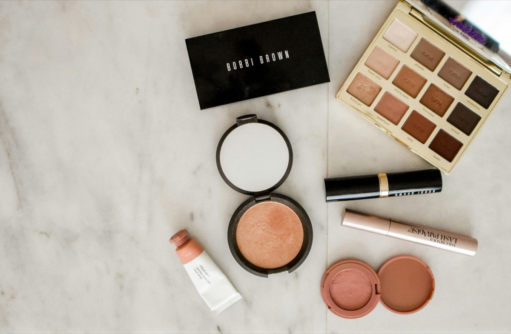

Skin in natural light.
A beauty journal exploring texture, portraiture and the small rituals of getting ready.
Explore journal ↘

A portrait beside the window
Turn the sitter slightly toward a window and watch the shadow along the cheek. A small change in angle can reveal texture without changing the makeup or the camera settings.
Choose a single light source before adding a reflector. Keep highlights on skin readable and preserve detail in the deepest shadow.
About Serein →Open the beauty notebook
The portrait edit
Choose a single light source before adding a reflector. Keep highlights on skin readable and preserve detail in the deepest shadow.
Explore the portrait edit ↗Daily ritual
Start with the objects already on the dressing table. The placement of a mirror, brush and towel can tell a more personal story than a staged collection.
Explore daily ritual ↗Colour notes
Compare colour against a neutral surface in the same light. Warm walls and coloured garments can influence how a shade appears.
Explore colour notes ↗Journal
View all ↗
Rotate the fragrance bottle
Drag the model to inspect its form, or use the rotation buttons.
The beauty notebook
The portrait edit
Choose a single light source before adding a reflector. Keep highlights on skin readable and preserve detail in the deepest shadow.
Explore the portrait edit →Daily ritual
Start with the objects already on the dressing table. The placement of a mirror, brush and towel can tell a more personal story than a staged collection.
Explore daily ritual →Colour notes
Compare colour against a neutral surface in the same light. Warm walls and coloured garments can influence how a shade appears.
Explore colour notes →Portrait notes
Choose a focus and download your notes as a text file.